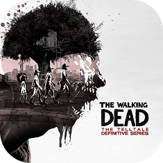
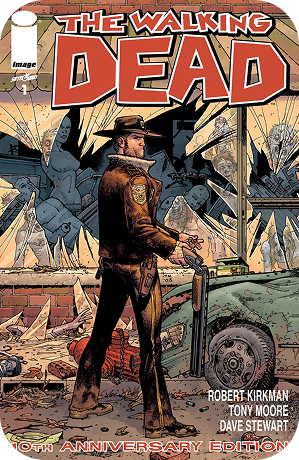

Jogos e HQs
Devido a fama que a série recebeu, a obra ganhou jogos
temáticos originais da série e criados pelo fandom,
além de ter dado ainda mais fama para as HQs já existentes
anteriormente no universo de The Walking Dead!

Telltale Games
A obra tem uma série de jogos originais, com todos eles sendo divididos em 5 partes. O jogo está disponível na steam, Ps store e Xbox store. O jogo tem como protagonista Clementine. Ela é apresentada na primeira temporada como uma garota de 8 anos encontrada por Lee Everett, um homem condenado que se torna seu guardião e figura paterna.

As HQs, como já dito antes, são o começo de tudo.
A obra tem diversas opiniões divididas, onde
muitos dos fãs não consideram a série fiel
o suficiente da história em quadrinhos, e
outra parte considera a série melhor pelos
quadrinhos serem muito fortes e não
desenvolverem personagens importantes
da série e vice-versa.